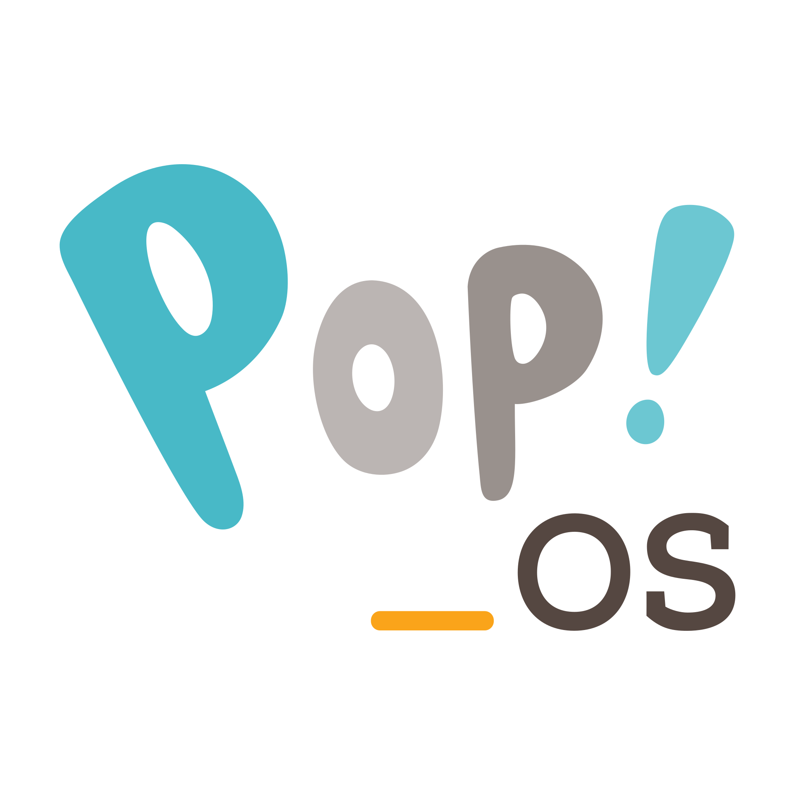

I use Pop!_OS 24.04 LTS, which is a Linux distribution based on Ubuntu. It is made by System76 and is designed to be stable, fast, and easy to use while still giving you full control over your system.
One reason I like it is because it feels clean and organized. It doesn’t come with a lot of unnecessary apps or clutter, but it still has everything you need for daily use like browsing, coding, or general work. It also runs smoothly and feels reliable. Another thing I noticed is that it manages system resources well. Even when I have multiple things open, it doesn’t feel heavy, and it doesn’t make my fans sound like a tractor.
Overall, Pop!_OS works well for me because it is simple when I need it to be, but still powerful when I want to customize things. It gives a good balance between ease of use and control.
